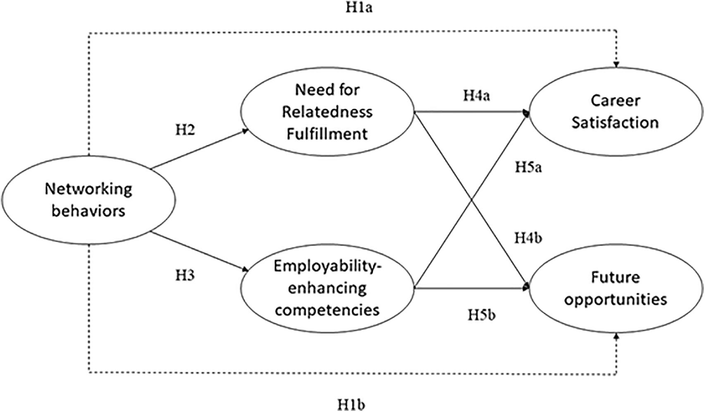

Networking Strategies for Professional Success
By: Sean
Introduction
Networking Strategies for Professional Success: Building Bridges to Career Advancement
Previous subheadings:
- Why Networking Is Essential to Professional Success: The Data Behind the Connection Game
- How to Build Your Network from Scratch: Tips and Tricks for Networking Success
- Networking with a Purpose: How to Leverage Your Connections to Advance Your Career
Introduction:
In an increasingly competitive job market, professional success often hinges on one's ability to network effectively. But what does that mean, exactly? How do you build a strong professional network that can help you achieve your goals? In this article, we'll explore the science behind networking and provide practical tips for building and leveraging your connections to advance your career.
As you'll see, networking is about more than just rubbing elbows at cocktail parties or sending out LinkedIn requests to everyone in your industry. It's a strategic process that requires intention, effort, and a willingness to give as well as receive. But the payoff can be immense, both in terms of career advancement and personal fulfillment.
So if you're ready to take your networking game to the next level, read on! We'll show you how to build bridges, make authentic connections, and turn your network into a powerful tool for success.
ad space
The Importance of Networking
Networking Strategies for Professional Success: The Key to Unlocking Your Potential
In today's highly competitive job market, finding success can be challenging. While there are many factors that contribute to career advancement, one of the most important is networking. Building a strong professional network can help you gain access to new opportunities, resources, and insights that can boost your career prospects.
But what exactly is networking, and why is it so important? Simply put, networking is the act of meeting and forming relationships with other professionals who can help you in your career. This could mean attending industry conferences, joining professional associations, or simply reaching out to colleagues and contacts for advice and support.
The benefits of networking are many. Studies have shown that job seekers who network proactively are able to find new jobs faster and earn higher salaries than those who don't. Networking can also help you stay up-to-date on the latest industry trends and best practices, which is important in fast-changing fields like technology and finance.
Perhaps most importantly, networking can help you build a personal brand and establish yourself as a thought leader in your field. By attending industry events, publishing articles and blog posts, and engaging with your peers on social media, you can build a reputation as someone who is knowledgeable, professional, and well-connected. This can lead to new opportunities and greater professional recognition.
Of course, networking isn't always easy. It can require a lot of time, effort, and social finesse to build and maintain strong professional relationships. But for those who are willing to put in the work, the rewards can be significant. By mastering the art of networking, you can unlock your full potential and achieve the success you've always dreamed of.
So why wait? Start building your professional network today! Whether you're attending a meet-up, reaching out to old colleagues, or simply engaging with your peers online, there's no better time to start than now. With a little bit of effort and a lot of persistence, you'll be on your way to success in no time.
ad space
Networking Techniques
"Unlocking the Power of Networking Techniques for Career Advancement"
Gone are the days when career success was solely dependent on technical skills or academic excellence. The modern-day workplace demands more than just these attributes. Networking techniques have become a key component for paving a successful career path. Our website is dedicated to providing you with valuable insights and strategies for effective networking that can boost your career prospects.
Networking is the art of building and maintaining professional relationships. It's an essential skill that requires patience, perseverance, and a willingness to step out of one's comfort zone. Networking techniques are not just about collecting business cards or expanding your contact list; it's about creating meaningful connections that can prove advantageous in the long run.
As per a recent study, 85% of job seekers found networking to be critical in landing their current position. This statistic alone highlights the necessity of developing a strong network for professional success. Our website provides practical networking techniques, including tips to build a strong online presence, creating elevator pitches, and strategies for building relationships with influencers.
We understand that networking can be daunting, especially if you are an introvert or new to the industry. Our website is designed to offer you guidance, inspiration, and motivation to take the first step towards networking. We also provide case studies and examples of successful professionals who've leveraged their network to achieve their career goals.
Join us as we empower you with the right networking techniques and help you achieve professional success. Remember, the right network can open doors that can lead to endless opportunities.
ad space
Building Your Network
Building Your Network: The Key to Success in Today’s Professional World
In today's fast-paced and ever-changing professional world, networking has become a critical component in achieving success. Whether you're searching for a new job, looking to build your business or simply trying to make valuable connections in your industry, building a strong network can open new doors and provide invaluable opportunities.
But how do you create a strong, effective network? It's not enough to simply attend networking events and collect business cards. Successful networking requires a multifaceted approach that includes everything from building relationships with colleagues and cultivating a personal brand to leveraging social media and participating in professional associations and organizations.
Research shows that maintaining and fostering a professional network can lead to higher salaries, greater job satisfaction, and even faster career advancement. In fact, in a survey conducted by LinkedIn, 85% of jobs are filled through networking, making it a critical aspect of professional success.
To help you build your network and achieve career success, we've compiled strategies from thought leaders and industry experts. Follow these tips to grow and maintain your professional network, and take your career to the next level.
ad space
Maintaining Your Network
In today's hyper-connected world, networking is key to professional success. You've put in the time and effort to build a strong network, but how do you ensure that you stay connected with those in your circle? In this section, we'll explore the importance of maintaining your network and provide you with proven strategies to help you stay in touch with your professional contacts.
Whether it's sending regular updates, connecting on social media platforms, or scheduling regular check-ins, staying top of mind with your network is crucial. Not only can it lead to new opportunities, but it can also help you stay informed about industry trends and developments.
Research has shown that maintaining your network can lead to increased job satisfaction, higher salaries, and greater career success. In fact, a recent study found that individuals who maintained a strong professional network were up to 10 times more likely to land a job than those who solely relied on job postings.
So don't let your hard work go to waste. Make sure you have a plan in place to keep in touch with your professional contacts and continue to grow your network. We'll provide you with the tools and resources you need to stay connected and achieve professional success.
ad space
Conclusion
As you finish reading this guide on networking strategies for professional success, it's clear that networking is much more than just small talk and exchanging business cards. It's about building meaningful relationships, exploring new opportunities, and learning from others. Hopefully, this guide has given you a better understanding of the importance of networking and practical ways to improve your networking skills.
Remember, networking is not a one-time event but an ongoing process. So, keep expanding your circle and building stronger connections. You never know who might offer you your next career opportunity or be the missing piece of knowledge you needed to achieve success.
In conclusion, networking is a vital element in today's professional landscape. Successful professionals understand the power of cultivating strong relationships and make it a priority to network consistently. By utilizing the strategies outlined in this guide, you too can begin building a powerful network that opens doors to new opportunities and enhances your professional success.
ad space